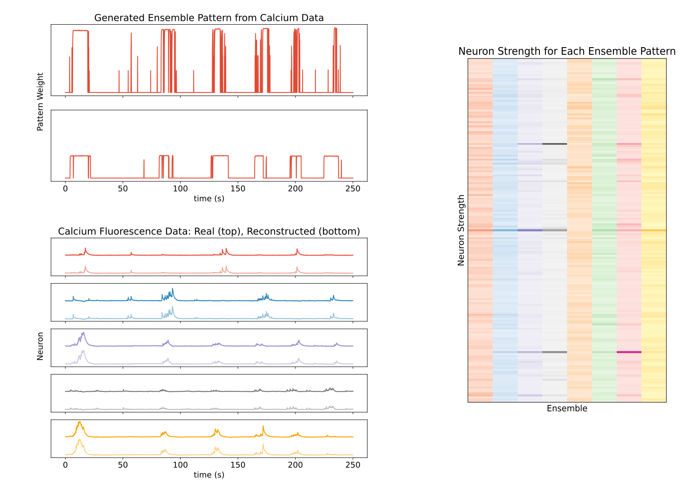

The question
Large-scale neural recordings have revealed rich spatiotemporal correlations in neuronal activity. These correlations suggest that much of what we record from thousands of neurons is driven by a lower-dimensional structure — an idea that mirrors the manifold hypothesis in machine learning, which holds that high-dimensional data often lie on a lower-dimensional manifold. That raises a central question for computational neuroscience: how can we compress neural data in ways that genuinely improve our understanding of brain function?
From SPLAT to Glow-SPLAT
The Pearson Lab previously developed SPLAT (Sparse Pattern Learning Across Time), a model that uncovers neural ensemble patterns from spike-count recordings. I'm extending it to calcium imaging — an increasingly popular way to monitor neural population activity at scale — so that SPLAT can analyse these new kinds of data while keeping its strengths in dimensionality reduction.
Glow-SPLAT, named for the fluorescence of calcium signals under the microscope, is a statistical generative model for continuous calcium imaging data. It learns with an Expectation–Maximization framework: particle filtering (sequential Monte Carlo) in the E-step and gradient descent in the M-step. It's implemented in JAX to make full use of GPU acceleration, which matters when fitting large-scale neural data quickly.
Keeping up with the experiment
Like SPLAT, Glow-SPLAT runs in a streaming setting, which makes it well suited to adaptive experiments where parameters are adjusted on the fly as data arrive. It can currently analyse thousands of neurons faster than the rate of data acquisition — opening the door to interpreting population activity in real time and using it to guide the experiment itself.
